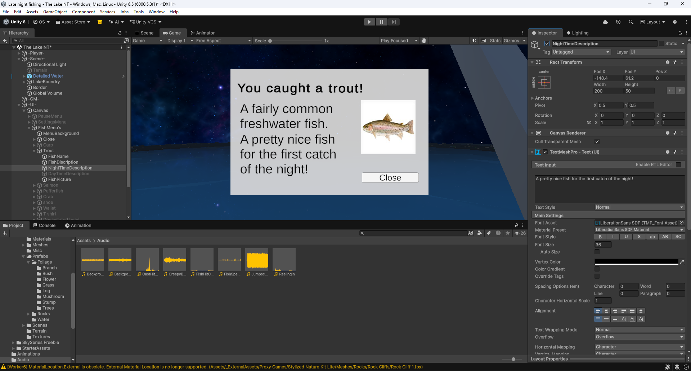
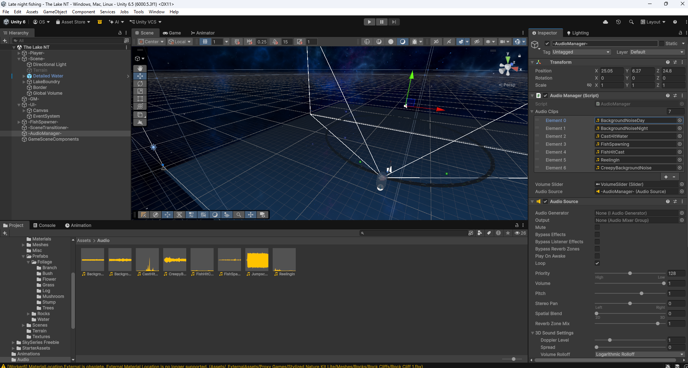
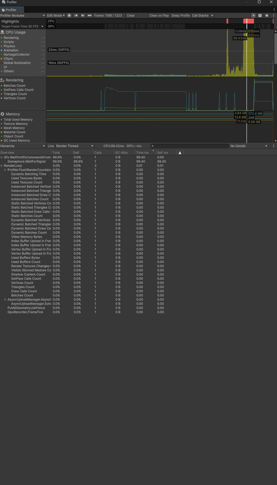
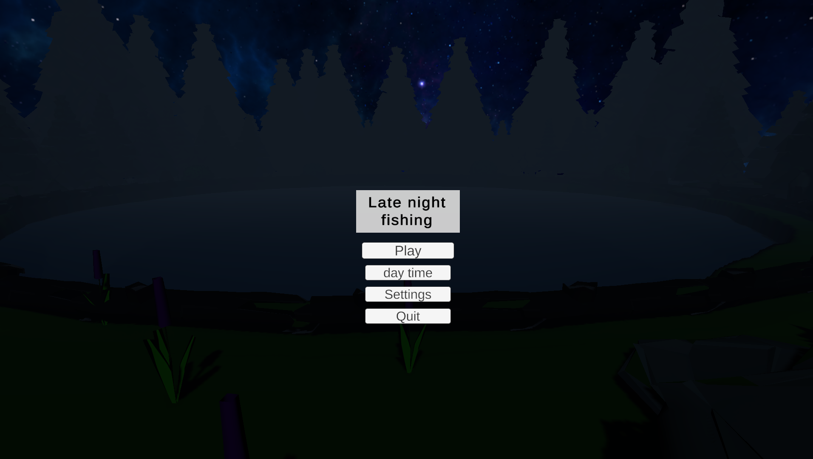
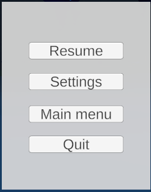

Video Game
Late night fishing
A game I made all by myself as a little side project: a horror fishing simulator with a fun daytime game mode where even people who dislike horror can enjoy the experience of fishing.

About the Project
Late night fishing was a project I made to test and work on immersion from the player. I decided to make it a horror game for the fact that with these types of games its easy to tell when someone is immeresed if the jumpscares and atmoshpere get to them.
My Contribution
- Sound editing (the actual sounds were external assets)
- Level design (the actual assets were from the unity store)
- Post proccessing
- Coding
- Gameplay Design
- Narrative Design
Project Details
Role
Game Designer, Engineer, sound designer
Engine
Unity
Team Size
1 person (me)
Duration
2-3 weeks
Development Process
Below you can find some screenshots and explenations about the design process and choices that were made.
I wanted to convey a sense of story and immersion to the player through the fish pop-ups. The text being first person, bringing a sense of the player commenting on their catch, thereby immersing them more. Starting slow and nice at the beginning, before ramping up the horror aspect. This way it brings a nice flow to the story so players don’t get whiplash from the sudden story beats.

As my goal was immersion I realised quickly how important the audio was. Therefore I focussed quite a bit on the sound design of this project. I made sure to add all the sounds I could think of when one would go fishing. (bobber hitting the water, waves, crickets in the night) and some that were neccecairy for the gameplay to run smoothly (like a fish spawning in having a noise).
But simply having the audio doesn't guarantee immersion or horror. Therefore playing with the audio when the horror started was also important. One example would be how I cut the background noise when the user started the scary part of the game, taking away a sense of peace and calm, and letting them sit in silence for a moment. After that I would replace the background sound with a low bass sound that continue'd to play to increase tension just before the jumpscare.

As I ran into some performance issue's with running the game on my laptop I had to make some simple changes to my game. The rendering of the level took a lot of work for the console which meant my laptop fans would try and take off every time I tried to start the game. To fix this issue I implemented a loading screen that would load the scene in the background at a pace the laptop could comportably handle. By having a loading screen I would be able to fix performance without having to showcase the player how the level was being rendererd in real time.

While there aren’t many settings, this was my first time working on an actual settings menu. This game’s audio had such a significant role meaning I didn’t want to leave it up to chance if the player found it too loud or quiet. Therefore I decided to make an audio slider in the settings which allowed players to adjust their audio levels so everyone could enjoy the game with their own preferences. While not implemented in this game I did research other settings like changing keybinds and the likes for future projects, allowing for my games to be more accessable in the future.


Final Result
In the end this project was a great success with my immersion tests!
I playtested my game multiple times with my peers where the first player who tested got so scared at the jumpscare they yelled in class.
After that unfortunately the immersion went down a little for the other users as they were either too scared to sit fully in front of the screen.
Or they were too scared to fully immerse themselves and refused to allow themselves to get immersed (by constantly trying to talk to me, or simply not putting in the headphones).
In the end however I think this means the game was a great success as I was even able to terrify players who have yet to play the game.